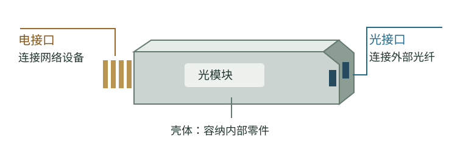

入门与基本零件 · 简明中文实验版
光模块入门：它是什么，怎样传送数据？
用一款 800G 产品，认识光模块、它传送的数据和内部零件。
第一页 · 从整体到零件01
什么是光模块？
光模块是一种让网络设备通过光纤收发数据的电子部件。发送时，它把设备的电信号变成光信号；接收时，它把光信号变回电信号。[28]
设备里的电路处理电信号，光纤传送光，光模块在两者之间完成转换。例如，两台交换机通过光纤连接时，两端各用一只光模块。交换机是负责把数据转发给其他设备的网络设备。
下面先认识一款具体产品，再看它怎样传送数据。
02
先看一款实际产品：800G 光模块
800G-DR8+ OSFP
型号：FTCE4527E1PCA。先列出这款产品的主要规格，再逐项解释它们的含义。
| 规格项 | 这款产品的规格 |
|---|---|
| 标称速率等级 | 800G |
| 光纤与距离 | 单模光纤，最长 2 km |
| 封装形式 | OSFP |
| 光接口 | 两个 MPO-12 连接器 |
| 电接口 | 八路 100G 级通道，带重定时 |
| 发送器件 | EML 发射器 |
| 接收器件 | PIN 探测器 |
这些规格说明什么？
800G：每秒能传送多少数据
计算机把文字、图片、视频等内容按规则编码成一串 0 和 1，这种表示方法叫二进制。每一位 0 或 1 叫一比特（bit）。使用这两个数，便于用电路中两种可区分的状态记录和处理数据，例如用不同的电压表示。[45]
1 Gb/s 表示每秒十亿比特，所以 800 Gb/s 表示每秒 8000 亿比特。产品名称中的 800G 是标称速率等级。实际传送时还需要附加信息来帮助正确传输，因此不能把标称速率直接当作用户实际可用速率。[6]
OSFP、MPO-12 和光纤：怎样连接设备
OSFP 规定模块的外形和插接要求，设备需要有配套插槽。本页把安装光模块的设备叫作主机。模块的电接口接主机电路，光接口接外部光缆。
MPO-12 是多纤光连接器的规格名称，用来连接含多根光纤的光缆。这款产品有两个这样的连接器。单模是它配用的光纤类型；2 km 是规格给出的最长链路距离。[6]

规格补充：八路电通道和两个光连接器怎样区分？
本例的主机电接口有八路 100G 级通道，每路是一条传送电信号的路径；接口带重定时功能，即恢复信号的时间节奏后再输出。[6]
“八路”数的是电通道，“两个”数的是光连接器。MPO-12 是连接器规格名称，实际使用哪些纤芯、对应哪些光通道，要按接口定义读取。
规格书给出的每路线路比特率为 106.25 Gb/s，八路合计 850 Gb/s。这里的 850 Gb/s 数的是线路上传送的全部比特，包含通信所需的附加信息；它与 800G 标称等级的统计口径不同，也不能直接当作用户实际可用速率。[6]
EML 和 PIN：谁负责发送光，谁负责接收光
EML 产生光，并控制光强来携带数据；PIN 接收光，把光的变化转换成电流的变化。规格中的这两个名称，指出了这款产品使用的发送器件和接收器件。[1]
下面先看这些 0 和 1 怎样变成光的变化，再看 EML、PIN 等零件怎样完成这个过程。
03
数据怎样通过光传过去？
假设两台交换机各装一只前面介绍的模块，用光纤连接。每只模块都能发送和接收。现在看 A 怎样把一串数据 0110 发送给 B。
先用一个每次传一位数据的教学例子。两端约定：弱光表示 0，强光表示 1。发送电路根据要传的数据控制光强；发送 0110 时，光就依次变成弱、强、强、弱。
光纤把这串变化送到 B。接收端在约定的时刻测量光强，再按同样的规则读出 0110。根据数据控制光的变化，这个动作叫调制。[29]
这款 800G 产品怎样做：每次用四档光强表示两位数据
前面的两档示例每次传一位。Coherent 这款产品采用四档光强：两位数据有 00、01、10、11 四种组合，四档光强可以分别表示这四种组合。因此，在一个规定的时间段内，就能传两位数据。这种方式叫 PAM4（四电平脉冲幅度调制）。[6] [29]
光强档位示意。最低档不必完全熄灭；各档具体对应哪两位数据，由实际信号规则规定。一个这样的时间段也叫一个符号时间。
在相同总幅度范围内，四档之间的间隔比两档小，噪声更容易使接收端认错档位。因此，接收电路需要更准确地区分光强。[29]
现在已经知道要传的是什么。下面看 EML、光路连接和 PIN 等零件怎样接力完成这件事。
04
模块里的零件怎样完成发送和接收？
前面介绍的产品用 EML 发送光，用 PIN 接收光。先读下面四段，依次认识发光、接光纤、探测和放大；本节末尾把它们连成一张原理图。[1]
发送端：把发出的光送入光纤
EML 发出的光需要进入光纤。把光从一个器件引入另一段光路的过程，叫耦合。例如，在使用透镜连接的方案中，透镜把光汇聚到光纤入口；装配时把它们对准并固定，让光进入光纤。[22]
这里可以分清三件东西：耦合结构负责把光引入光纤，光纤负责传送光，连接器负责把外部光缆接到模块上。第 02 节规格中的 MPO-12 就是外部连接器。
A 端模块：发送
激光段和调制段位于同一个 EML 内
来自主机的电信号 → 驱动器 → 调制段这条支路传送控制光强的电信号
B 端模块：接收
这些零件完成信号转换。它们还需要电能、固定位置和散热条件。
05
零件怎样供电、连接、固定和散热？
模块里的器件通电后才能工作，还要连接牢固并及时导出热量。下面几类电路和结构分别承担这些任务。
供电与控制电路
提供电能，并维持器件所需的工作条件。例如，激光段需要受控的工作电流。[2]
电路板
板上的导电线路把器件连接起来，用于供电和传送电信号。印刷电路板简称 PCB。
载体与壳体
载体用于固定器件；壳体容纳、保护内部零件，并与设备插槽配合。
散热结构
把器件产生的热量导出，使器件在要求的温度条件下工作。
读完后
试着说明一次数据传输
光模块与光纤分别做什么？
光模块在电信号与光信号之间转换，光纤在两端之间传送光。
为什么文章会讲到 0 和 1？
计算机把文字、图片等内容按规则编码成二进制数据，再用电信号和光信号传送这些数据。接收端按相同规则读回数据。
EML、PIN 和 TIA 各做什么？
EML 产生光并控制光强；PIN 把光强变化转成电流变化；TIA 把电流转成电压并放大。接收系统还要在约定时刻判断状态，才能读回数据。
本页介绍了一种发送和接收方案。下一页比较不同技术路线，说明器件与装配怎样变化。
打开下一页：技术路线与制造 →资料与适用范围
这些说明依据什么？
参考产品的器件和接口以制造商产品表、规格书为准。器件原理资料解释各零件的作用；它们不能代替这个型号的完整零件清单。
资料说明：原理图与产品规格
Coherent 产品表与规格书给出了 EML、PIN、OSFP、双 MPO-12、八路电接口及重定时等信息。正文以这些信息选定例子。[1] [6]
器件原理图说明信号的传送过程，透镜耦合段说明一种连接方法。这些示意不代表该型号的完整内部结构。现有产品资料尚不能确定其驱动器与放大器的具体型号、芯片数量、内部耦合结构、材料与装配细节；这些项目仍记为 UNKNOWN。
两份用户提供的研报用于补充器件与技术路线背景。材料和其他路线放在后续页面介绍，本页先讲清这组器件的作用。[43] [44]
来源与适用范围 · 12 项
- [1] Coherent — 800G-DR8+ OSFP Optical Transceiver
产品表：仅支持具体型号公开参数。
- [2] Lumentum — EMLs
器件说明：支持 DFB 与 EAM 的集成和作用，不指定参考型号供应商。
- [6] Coherent — FTCE4527E1PxA Product Specification; Rev B2; pp 1,3
March Rev B2：第 1 页产品与接口，第 3–4 页电光参数；年份未标。
- [22] ficonTEC — Capabilities; undated; Motion Systems For Passive and Active Alignment; direct HTML retrieved
ficonTEC 能力说明：支持对准原理，不证明本型号采用其设备。
- [26] TI — AC-coupled transimpedance amplifier circuit; Overview; low-speed principle example
TI 原理电路，300 kHz 示例只解释电流转电压，不用于高速器件选型。
- [28] Cisco：Silicon Photonics in Pluggable Optics，2021-12-06
Basics of silicon photonics 与 Manufacturing efficiency。仅取工作路径和制造动机，不泛化厂商成本优势。
- [29] Cisco：Single-Lambda 100G，2023-02-04，What is PAM4
What is PAM4 段，支持四档、每符号两位与噪声权衡。
- [33] Hamamatsu：Photodiodes，工作原理
光电转换的一般原理，文中硅光电二极管图不代表参考模块 PIN 的材料结构。
- [43] 浙商证券：《光模块技术路线梳理》，2026-06-12
本地用户提供；第6页图1及第7页功能分层，第9–13页电路功能。第24页NPO/CPO表述与正文冲突，未用作定义。
- [44] 浙商证券：《光芯片产业梳理》，2026-06-30
本地用户提供；第6页图2、第7–8页器件分类。报告对EML分立/集成及探测器材料等有互相冲突的说法，未据此定论。
- [45] Harvard CS50 — Lecture 0
Binary、Text、Images, Video, and Sound：解释比特，以及文字、图片等内容怎样用二进制表示。
- [46] Hamamatsu — Guide to detector selection
Avalanche photodiodes：解释电场加速、碰撞产生更多载流子及内部倍增。不用于判断参考产品的材料或内部布局。